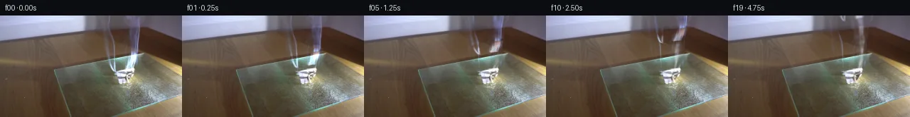

![首帧]()

Round 00
2026-11-05T15:20:14.476549+00:00像素候选变化代码 +232/−0inspection 更新
pixels 776a9b390c9ee8ef · code c30a2248b6ee9f23
查看本轮 generate.py 真实 diff
--- previous/generate.py
+++ current/generate.py
@@ -0,0 +1,232 @@
+"""Deterministic local pixel animation of the supplied burning-paper photograph."""
+from pathlib import Path
+import json
+import numpy as np
+from PIL import Image, ImageDraw
+from scipy.ndimage import gaussian_filter, map_coordinates
+from scipy.interpolate import PchipInterpolator
+from artifact_io import save
+
+ROOT = Path(__file__).resolve().parent
+SOURCE = np.asarray(Image.open(ROOT / 'first_frame.png').convert('RGB'))
+H, W = SOURCE.shape[:2]
+Y, X = np.mgrid[:H, :W].astype(float)
+
+
+def path_field(points, widths):
+ """Soft, vertically parameterized ribbon mask in source-pixel coordinates."""
+ pts = np.array(points, float)
+ cx = PchipInterpolator(pts[:, 1], pts[:, 0])(np.arange(H))
+ radius = np.interp(np.arange(H), pts[:, 1], widths)
+ valid = (np.arange(H) >= pts[0, 1]) & (np.arange(H) <= pts[-1, 1])
+ distance = abs(X - cx[:, None]) / radius[:, None]
+ return np.exp(-0.5 * distance ** 4) * valid[:, None]
+
+
+# Measured initial wisps, including the returning side of the left loop.
+mask = np.maximum.reduce([
+ path_field([(154, 0), (152, 17), (154, 37), (158, 58), (161, 75), (166, 81)],
+ [2.7, 2.6, 2.4, 2.7, 2.5, 2.6]),
+ path_field([(146, 0), (148, 23), (150, 43), (153, 63), (158, 76), (164, 80)],
+ [1.5, 1.9, 1.8, 2.3, 2.3, 2.0]),
+ path_field([(192, 0), (194, 14), (193, 33), (192, 48), (188, 62), (181, 74)],
+ [6.0, 5.0, 4.5, 4.3, 5.0, 5.0]),
+ path_field([(177, 0), (181, 15), (186, 30), (186, 44), (182, 62), (176, 76)],
+ [6.0, 4.0, 3.7, 3.8, 4.2, 4.2]),
+])
+# Keep the folded paper and its contact reflection out of smoke reconstruction.
+mask[Y >= 78] *= np.clip((81 - Y[Y >= 78]) / 3, 0, 1)
+mask = gaussian_filter(mask, 0.45)
+
+# Estimate obscured background by neighboring pixels in each scanline. Sampling
+# along the board's receding edge preserves its perspective across the plume.
+reconstruction = SOURCE.astype(float).copy()
+for yy in range(81):
+ flags = mask[yy] > 0.08
+ runs = np.flatnonzero(np.diff(np.r_[False, flags, False]))
+ for left, right in zip(runs[::2], runs[1::2]):
+ xl = max(0, left - 3)
+ xr = min(W - 1, right + 3)
+ xs = np.arange(left, right)
+ u = (xs - xl) / (xr - xl)
+ # Local image-plane slope: tabletop border above, glass edge below.
+ slope = -0.205 if yy > 43 else (-0.08 if yy > 13 else 0.0)
+ for channel in range(3):
+ plane = SOURCE[:, :, channel].astype(float)
+ lval = map_coordinates(plane, [yy + slope * (xl - xs), np.full(len(xs), xl)], order=1, mode='nearest')
+ rval = map_coordinates(plane, [yy + slope * (xr - xs), np.full(len(xs), xr)], order=1, mode='nearest')
+ reconstruction[yy, xs, channel] = lval * (1-u) + rval * u
+
+# Only the positive pale component is smoke. This avoids translating dark grain
+# or the reconstructed glass edge along with the smoke.
+diff = SOURCE.astype(float) - reconstruction
+pale = np.clip((0.25 * diff[..., 0] + 0.35 * diff[..., 1] + 0.40 * diff[..., 2]) / 8, 0, 1)
+smoke_mask = mask * gaussian_filter(pale, 0.65)
+initial_smoke = np.maximum(diff, 0) * smoke_mask[..., None]
+background = SOURCE.astype(float) - initial_smoke
+Image.fromarray(np.uint8(np.clip(background, 0, 255))).save(ROOT / '.tmp' / 'background.png')
+Image.fromarray(np.uint8(np.clip(initial_smoke * 3, 0, 255))).save(ROOT / '.tmp' / 'smoke_extraction.png')
+
+# Render small translucent details at four times the native resolution.
+S = 4
+hy, hx = np.mgrid[:H*S, :W*S].astype(float) / S
+rng = np.random.default_rng(139)
+# Stable multi-scale scalar fields. Time moves them upward with the hot air.
+noise1 = gaussian_filter(rng.normal(size=(H*S, W*S)), 8)
+noise1 /= np.std(noise1)
+noise2 = gaussian_filter(rng.normal(size=(H*S, W*S)), 2)
+noise2 /= np.std(noise2)
+
+
+def down(a):
+ return a.reshape(H, S, W, S).mean(axis=(1, 3))
+
+
+def old_smoke(t):
+ # Continuous buoyant upward motion; the lower bright smoke moves faster.
+ srcy = Y + (15.0 + 5.0 * np.exp(-((Y-64)/20)**2)) * t
… diff truncated; 145 more lines …